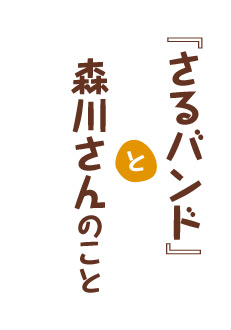
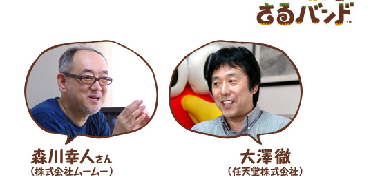

森川さんは、ちょっと変わった来歴をお持ちですよね。
学校は美術系の出身で、元々はエディトリアルという、本のパッケージやレイアウトの仕事をやっていました。その後、ちょっとそこにはなじまなくなって、『アインシュタイン』や『ウゴウゴルーガ』といったテレビのCGを作っていたんですが、ひょんなことからゲーム業界に誘われまして。30代になってからこちらの業界に入ったんですが、あっという間に10年ですね。当時から人工知能や自動生成のものが好きで、ずっと作り続けています。
絵本も描かれていたり。
人工知能の本も書いていますね。物理とか生物とか、科学一般が好きなもので。
幅広く活動されているイメージがあります。
ものすごく偏っていますけどね（笑）。科学が好きなのにアウトプットは表現系がメインというのが珍しくて、そこが認めていただけた部分なのかなと思っています。
任天堂と一緒にゲームを作っていただいたのはニンテンドーDSの『タシテン』※1から2作目です。
※1
『タシテン』…2007年10月10日に発売されたニンテンドーDS用ソフト。
2つ以上の数字を組み合わせて、10や20（10の倍数）を作りながら不思議な世界を冒険する。
 公式ホームページはこちら
公式ホームページはこちら
そうですね。実際にお仕事をさせていただいたのは、ニンテンドーDSからということになります。
DSが発売されるころに、面白いゲームを作ってもらえそうな方にお声がけをしようということで、はじめて森川さんや（『エレクトロプランクトン』※2の）岩井俊雄さんとお会いしまして。それから一緒にお仕事もさせていただきましたし、ほかにも量子物理学からラーメンの話までいろいろと勉強させてもらっています（笑）。
『タシテン』が一番の佳境にさしかかっていたときに、『さるバンド』の企画を持ってこられたんです。もう次のことを考えたいという感じは、森川さんらしいなと思いましたね。
※2
『エレクトロプランクトン』…2005年4月7日に発売されたニンテンドーDS用ソフト。
プレイヤーからの操作や声に、しぐさや音で反応する「電子プランクトン」とさまざまな音色を奏でて遊ぶソフト。
2009年7月からはニンテンドーDSiウェアでも配信されている。
 ニンテンドーDSiウェア版の公式ホームページはこちら
ニンテンドーDSiウェア版の公式ホームページはこちら
デバッグとかマスターアップまでの間って、ホントに飽きちゃうんですよ。
（笑）
基本的に悪いことしか出てこないわけじゃないですか（笑）。
ここで止まったとか、ここに矛盾があるとかをつぶしていく作業にうんざりしちゃうんで、次の楽しい企画のことを頭の片隅で考えて、バランスをとってるんです。
こちらは実務の話で頭がいっぱいになっているところで持ってこられたので、「サルが歌うんですか。面白そうですね〜。でも、終わったあとゆっくりお話ししましょうか」みたいな感じで（笑）。
森川さんは作りながら別のアイデアもガンガン出てくる人なんですね。次の作品まで空白がない。それはなかなかできないことだし、本当にすごいなと思います。
まあ、量を出せばそれでいいのかって話なんですが。
アイデアの量を出すって大変じゃないですか（笑）。
人工知能や科学の本なんかでも、一度に5冊くらい並行して読むんです。その方が頭に入ってくる。だから、できればゲームも3つか4つくらい並行で作りたいんです。いや、実際はできないんですけど（笑）。